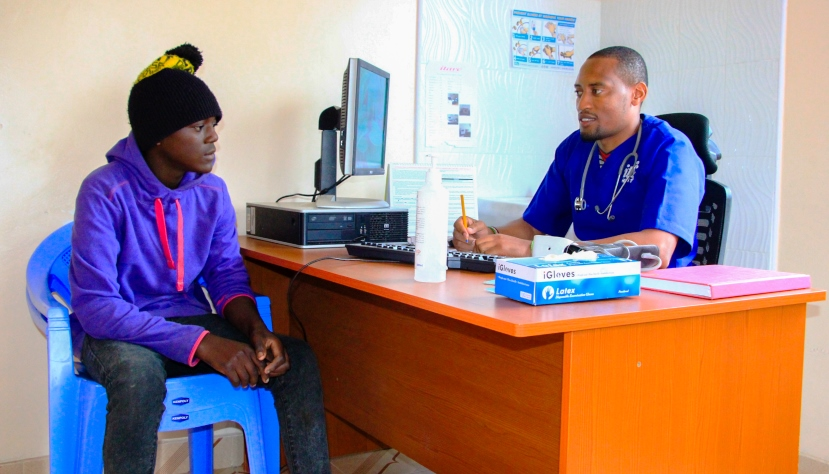

We offer consultation services on any kind of health matters at an affordable fee.Feel free to reach us.

Lab Services
The clinical laboratory in a hospital runs tests on patients that pertain to the diagnosis, prevention and treatment of diseases. Although the laboratory is within the hospital, it generally does other testing aside from tests conducted for the hospital.
NBU Services
Newborn babies who need intensive medical care are often put in a special area of the hospital called the neonatal intensive care unit NICU. The NICU has advanced technology and trained healthcare professionals to give special care for our tiniest patients. Our Hospital has a two bed NICU for babies who are not as sick but do need specialized nursing care. Babies who need intensive care do better if they are born in a hospital with a NICU as opposed to being moved after birth.
Theatre Services
The neurosurgical team provides comprehensive services for the diagnosis, treatment and management of neurological disorders (disorders affecting the brain, skull, spine and nervous system). We provide both planned and emergency services for a wide variety of general neurosurgical conditions. Our Neuro clinic is situated within the main hospital complex.
Opening hours – 9:00 A.M -5:00 P.M
Maternity Services
5We strive to provide the best care for both mother and baby before, during and after delivery. Our ultra-modern maternity wing assists mothers to have safe deliveries both normally or through caesarian section. We have a committed team of the best Gynecologists and Pediatricians ready to offer their services.
Family Planning
Family planning helps protect women from any health risks that may occur before, during or after childbirth. These include high blood pressure, gestational diabetes, infections, miscarriage and stillbirth